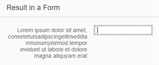

What's New in OpenUI5 1.50
With this release, OpenUI5 is upgraded from version 1.48 to 1.50.
New Demo Kit (already available as of version 1.48.5)
The Demo Kit app has a new modern design that is intuitive and can be used on both desktop and mobile devices.
The global search has been improved and the results are now displayed in categories. They also include results from the Samples section, which was not possible with the old Demo Kit since the Explored app was a decoupled app.
The new Demo Kit contains the following sections:
|
Disclaimer: The below video  is not part of the SAP product documentation. Please read the legal disclaimer for video links before viewing this video. is not part of the SAP product documentation. Please read the legal disclaimer for video links before viewing this video. |
New Controls
sap.m.PlanningCalendarLegend: Enables two types of items to be displayed in the sap.m.PlanningCalendar as a legend - types of days (for example, special dates and holidays) and appointments. For more information, see the API Reference.

Improved Controls
- sap.f.DynamicPage has the following new features:
You can now define the priority of the DynamicPageTitle areas with the use of the new primaryArea property. The primary area shrinks at a slower rate, remaining visible as long as possible.
With the new content aggregation of the DynamicPageTitle, you can add content in the middle area of the title. This content is displayed both in the expanded and collapsed states of the DynamicPageHeader.
- sap.f.semantic.SemanticPage: To align with the latest SAP Fiori design guidelines, the following changes were implemented:
The position of the draft indicator is changed to be the first one before the finalizing actions in the footer toolbar of the page.
A new Edit button was added as the main action and the order of the actions changed to Edit, Delete, Copy, and Add.
- sap.m.Label has the following new properties:
wrapping: Determines whether text within a label is wrapped. The default value is false. If set to false, the label text only uses one line and any exceeding text is truncated and replaced with an ellipsis. When you use the Label within a sap.m.Form the label text is automatically displayed as wrapped.
displayOnly: Determines whether the label is in displayOnly mode. Controls in this mode are non-interactive, non-focusable, cannot be edited, and do not form part of the tab chain. The displayOnly property is used in Form controls when they are in preview mode.
sap.m.MessageStrip now supports a limited set of formatting tags for the text. The available tags are <a>, <em>, <strong>, and <u>. To enable the additional formatting tags, you have to set the enableFormattedText property to true. For more information, see the API Reference and the Samples.
sap.m.Panel has a new parameter for the expand event that identifies whether the user or the application is expanding or collapsing the Panel control. The parameter is called triggeredByInteraction and is true when the panel is expanded as a result of a user action. For more information, see the API Reference and the Samples.
- sap.m.PlanningCalendar:
You can now directly navigate to a date with fewer clicks.
With the use of the new builtInViews property the app developer can now define which of the built-in views are displayed. For more information, see the API Reference and the sample.
To save space, the days are now displayed on the same line as the dates. If you want to display the day names on a separate line, set the showDayNamesLine property to true. For more information, see the API Reference and the sample.
sap.m.ProgressIndicator: You can now set the control in a display-only state using the new displayOnly property. When set to true, the control has different visualization and is not active, not editable, and cannot be focused. For more information, see the API Reference and the Samples.
sap.m.RatingIndicator: A new state can be set using the displayOnly property. It enables visually distinguishable rendering of the RatingIndicator (gray color), denoting it as non-interactive in forms. All controls in this mode are also non-focusable and not part of the tab chain. For more information, see the API Reference and the Sample.

sap.m.semantic.SemanticPage. You can now set the background color of the page using the new backgroundDesign property. For more information, see Semantic Page (sap.m) and the API Reference.
sap.m.UploadCollection: UploadCollectionItem has been extended to display folders in the UploadCollection control. When you click the file name or item thumbnail, you can perform custom actions by adding an event handler to the press event. With the deletePress event, you can control the deletion of an item. For more information, see the API Reference and the sample.
sap.m.Tree: The toggleOpenState event has been added. For more information, see the API Reference and the sample.
sap.ui.unified.Calendar: The days of the previous/next month are no longer visible whenever the sap.ui.unified.Calendar displays multiple months. For more information, see the API Reference and the sample.
sap.ui.layout.form.Form and sap.ui.layout.form.SimpleForm: The samples, including the descriptions, have been simplified and are now more consistent. For more information, see the Form and the SimpleForm samples.